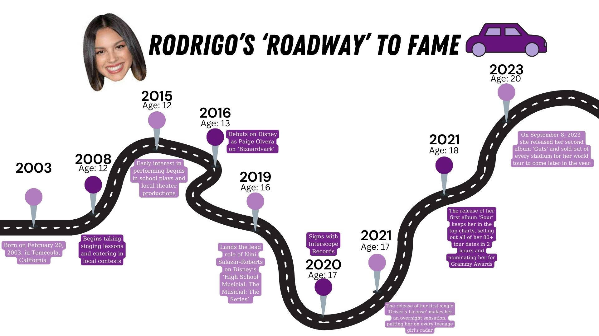

In an era dominated by digital dynamism and social media, there aren’t a lot of super popular celebrities and artists in the public eye that don’t have the internet to thank for jump-starting their career. Justin Bieber, Shawn Mendes, Charlie Puth and Alessia Cara, just to list a few, are names that you know because of their digital discoveries. It’s therefore not super surprising that the web is what brought one of current most famous female singers in the United States into the spotlight.
But How Did The Teenage (Dream) Wonder Get Her Start?
Olivia Isabel Rodrigo, the only daughter of an elementary school teacher and a family therapist, was born on February 20, 2003 Temecula, CA. Within the first few years of her early childhood, Rodrigo’s love for singing and need to be on stage was brought to light and fostered in lessons by the age of five. From there she entered into several local singing competitions (ones she always came out on top in) and began acting in small plays and theaters in the surrounding area. A few auditions over the next ten years landed her the roles of Grace Thomas in the film An American Girl: Grace Stirs Up Success and Paige Olvera in the Disney television show Bizaardvark. After the three seasons of that show ended, Rodrigo booked the leading role of Nini Salazar-Roberts on the Disney+ series High School Musical: The Musical: The Series where she left three years following to focus on her music career.
The Buildup To Rodrigo’s First Record Breaking Single
In 2020, Rodrigo had signed with Interscope Records and began creating what would be arguably the most pivotal song of her career. Just a year later, after teasing it across her social media platforms, Rodrigo released her first single ‘Drivers License’. Within four days of the song's release, it broke Spotify’s record for the most one-day streams for a non-holiday song with over 15 million global streams. After a mere week, all eyes were on Rodrigo with her song reaching the top of the Billboard 100 charts and blowing up on every popular social media platform. She was now the face of pop music and an overnight success story.
Would The Fame Last Or Would Rodrigo Stay A One Hit Wonder?

While this isn’t the first time the world has witnessed a former Disney star become an international phenomenon, Rodrigo was still in the hot seat to see if her success was a one-time thing or would turn into a much more substantial career. According to her Netflix movie “Driving Home 2 U”, immediately following the success of ‘Driver’s License’, she felt an immense pressure to create more music and told her record label that she wanted to start on an album. Within a few months, she dropped singles ‘Deja Vu’ and ‘Good 4 U’ and crossed her fingers they would do as well as her first single. Her prayers were surely answered with both songs reaching the top ten on the Billboard Hot 100. Following this excitement came her very first album Sour that she released in May of 2021 containing 12 singles.
Turning 'Sour' To Sweet: How The Album Solidified Rodrigo’s Career
Unsurprisingly, Rodrigo’s first album was a major success and according to Billboard now stands as the longest-running debut album in the Billboard 200 Top 10 this century. To put that into perspective, that surpasses the 51 non consecutive weeks that Lady Gaga’s debut album ‘The Fame’ stood in the same position.
Let's Take A Look at the data of 'Sour'

With her blossoming success hailing her as one of the most prevalent pop stars in the world, Rodrigo followed up her album with a short film entitled ‘SOUR Prom’ released in the summer of 2021, in which all of the songs on the album are featured. In addition to this was the drop in March of 2022 of a longer film ‘Driving Home 2 U” about the process of writing every song in her album. In between these two came her very first tour which she announced on her social media on December 6, 2021. This tour, beginning in April 2022 and ending in July, held 33 shows throughout North America and 16 in Europe with a total of 49 shows. Tickets went on sale on December 10th, four days after the announcement and were sold out within minutes with some resale tickets going for as much as $9000. Despite her grave success and massive following, Rodrigo chose a lot of smaller venues for her first tour, something she was criticized for by fans and media outlets, yet defended this decision by telling the Los Angeles Times “I don’t think I should skip any steps”.

Rodrigo Reaping The Awards Of Her Success
With all of this success so fast, it was only a matter of time before Rodrigo was winning tons of awards and titles. Through the year of 2021 alone, she was debuted in the Billboard 200 top charts consistently, was named by Variety as “the voice of her generation”, received the title of ‘Entertainer of the Year’ by Time Magazine, and was regarded by the International Federation of Phonographic Industry (IFPI) as the tenth best selling artist of 2021 in the world.
The Year Strikes 2023, How Will Olivia Keep The Success Train Rolling?
By the time 2023 came around, it was time for Rodrigo to release another single or album to continue to bolster up her success. On June 30, she did just that by releasing her newest single ‘Vampire’. This led to a massive buildup of the release of her second album Guts in the following September. This album reflected a new sense of maturity found by Rodrigo and felt by fans and focused on the growing pains of her career and love life. Several singles on that album reached Billboard Hot 100 charts and led to Rodrigo becoming the youngest artist to receive over one billion digital streams in the United Kingdom.
A New Album Means A New Tour Right?

This question fans were all anticipating got brought to light very shortly after the release of the album with tour dates being announced and going on sale within a week of the album drop. Shockingly (not) enough to fans, tickets sold to only fans with presale tickets sold out in minutes on Ticketmaster and even worse yet, skyrocketed to nearly $2000 a pop by the minute. Rodrigo even had to add a few extra dates due to fan’s frustrations at not being able to get tickets. She officially will begin touring in 2024 with a total of 77 shows over seven months.
So Where Does This Leave Us?
Now sitting on two incredibly successful albums, three Grammy Awards, seven Billboard Music Awards, four MTV Video Music Awards, four iHeartRadio Music Awards and two People’s Choice Awards - it’s safe to say Rodrigo has a long career ahead of her. So fans, if you find yourself constantly replaying ‘Guts’ on repeat, keep an eye out for all the incredible things Olivia Rodrigo has up her sleeve in the decades to come.